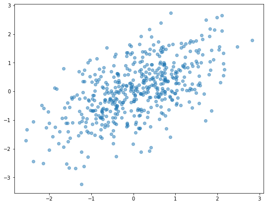
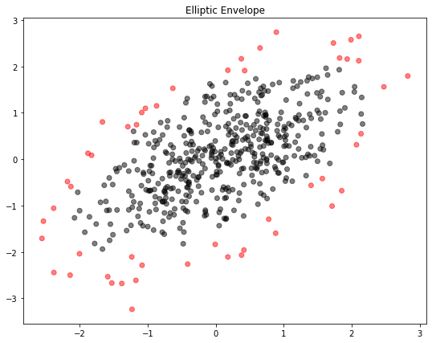
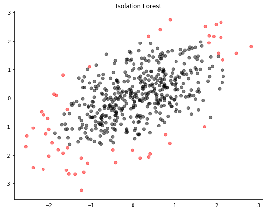
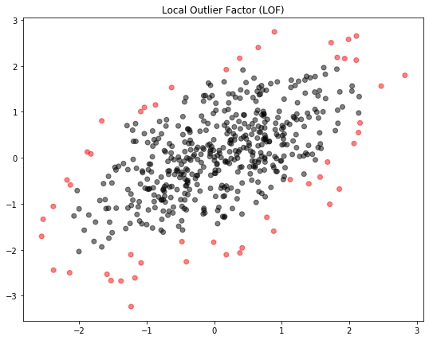
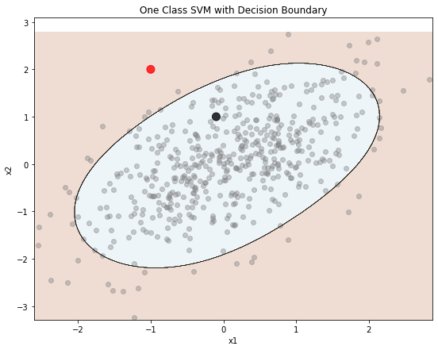

โดย ชิตพงษ์ กิตตินราดร | มกราคม 2563
หากเรามีชุดข้อมูลที่จะเทรนเพื่อสร้างโมเดล แล้วข้อมูลบางรายการมีค่าผิดปกติไปจากพวก Algorithm จะนำความผิดปกติเหล่านั้นไปคำนวนเป็นส่วนหนึ่งของโมเดล ซึ่งหมายความว่าเราอาจจะได้โมเดลที่ไม่ได้เป็นภาพสะท้อนที่แม่นยำของข้อมูลที่น่าจะนำมาใช้พยากรณ์จริง นั่นคือเกิดปัญหา Overfitting หรือ Variance นั่นเอง
เราเรียกปัญหานี้ว่าปัญหา Outlier หรือข้อมูล Input ที่ผิดแผกไปจวกพวก ซึ่งสามารถตรวจจับได้ด้วย Unsupervised learning algorithm ประเภท Outlier detection โดยเมื่อตรวจเจอแล้ว เราสามารถพิจารณาจัดการกับข้อมูลเหล่านั้น เช่นการลบออกไป เพื่อจะสามารถสร้างโมเดลที่เป็นตัวแทนที่ดีของข้อมูลส่วนมาก
ในอีกด้านหนึ่ง หากเรามีชุดข้อมูลที่เรารู้ว่า "ปกติ" อยู่ เราอาจต้องการตรวจจับข้อมูลใหม่ที่อยู่นอกกรอบของความ "ปกติ" โจทย์แบบนี้มีประโยชน์มากมาย เช่น การตรวจหาความผิดปกติของธุรกรรมการเงินเพื่อเฝ้าระวังการทุจริตคอร์รัปชัน หรือการตรวจการทำงานของเครื่องจักรต่างๆ ในระบบที่มีหลายเครื่อง เพื่อรู้ได้ทันทีเมื่อมีเครื่องที่ผิดปกติ เราเรียกกระบวนการแบบนี้ว่า Novelty detection ซึ่งก็คือการพยากรณ์ว่าข้อมูลใหม่นั้นเป็น Outlier เมื่อเทียบกับข้อมูลที่มีอยู่แล้วหรือไม่นั่นเอง
ในบทนี้เราจะมาเรียนรู้ Unsupervised learning algorithm สำหรับการตรวจจับความผิดปกติ โดยจะนำเสนอ Elliptic envelope, Isolation forest, และ Local Outlier Factor (LOF) สำหรับ Outlier detection ส่วน Novelty detection จะนำเสนอ One Class SVM
สมมุติว่าเรามีข้อมูลที่มีการกระจายตัวแบบ "มาตรฐาน" เช่นแบบ Gaussian distribution ดังภาพนี้:

เราสามารถใช้ Elliptic envelope หาจุดศูนย์กลางของข้อมูล แล้วตรวจหาข้อมูลที่อยู่นอกการกระจายเป็นวงรีแบบ Gaussian โดยจะพิจารณารูปร่างของวงรีตาม Covariance ของการกระจายตัวใน Matrix ข้อมูล
เราสามารถเรียกใช้ Elliptic envelope จาก Class EllipticEnvelope ในโมดูล sklearn.covariance
import numpy as np
import matplotlib.pyplot as plt
from sklearn.covariance import EllipticEnvelope
from sklearn.ensemble import IsolationForest
from sklearn.neighbors import LocalOutlierFactor
from sklearn.svm import OneClassSVM
# Generate 2-D random data
cov = np.array([[1, .6],
[.6, 1]])
X = np.random.RandomState(0).multivariate_normal(mean=[0, 0],
cov=cov, size=500)
# Call and fit the Elliptic Envelope detector
ee_detector = EllipticEnvelope(contamination=0.1).fit(X)
ee_detect = ee_detector.predict(X)
ee_detect
ตอนเราเรียก EllipticEnvelope instance (รวมทั้ง Anomaly detection algorithm อื่นๆ) เราสามารถกำหนด Argument contamination เพื่อระบุว่าเราจะตรวจหา Anomaly เป็นสัดส่วนเท่าใดเมื่อเทียบกับข้อมูลทั้งหมด เช่น 0.1 คือ 10%
ผลจากการเรียก Method .predict จะได้เป็น Array ที่มี Label ของข้อมูลแต่ละรายการ โดย 1 คือปกติ ส่วน -1 คือไม่ปกติ:
array([ 1, -1, -1, 1, 1, 1, 1, 1, 1, 1, -1, 1, -1, 1, 1, 1, 1,
1, 1, 1, 1, -1, 1, 1, 1, 1, 1, 1, 1, 1, 1, 1, 1, 1,
1, 1, 1, 1, 1, 1, 1, 1, -1, 1, 1, 1, 1, 1, 1, 1, -1,
1, -1, 1, -1, 1, 1, 1, 1, 1, 1, 1, 1, 1, 1, 1, 1, 1,
1, 1, 1, 1, -1, 1, 1, 1, 1, 1, 1, 1, 1, 1, 1, 1, 1,
1, 1, 1, 1, 1, 1, -1, 1, 1, 1, 1, 1, 1, 1, -1, 1, 1,
1, 1, 1, 1, 1, 1, 1, -1, 1, 1, 1, 1, 1, 1, 1, 1, -1,
1, 1, 1, 1, 1, 1, 1, 1, 1, 1, 1, 1, 1, 1, 1, 1, -1,
1, 1, 1, -1, 1, 1, 1, 1, 1, 1, -1, 1, 1, 1, -1, 1, 1,
1, 1, 1, 1, 1, 1, 1, 1, 1, 1, -1, 1, 1, 1, -1, 1, 1,
1, 1, 1, 1, 1, 1, 1, 1, 1, 1, 1, 1, 1, 1, 1, 1, 1,
1, 1, 1, 1, -1, 1, 1, 1, 1, 1, 1, 1, 1, 1, 1, 1, 1,
1, 1, 1, 1, 1, -1, 1, 1, 1, -1, 1, 1, 1, 1, 1, 1, 1,
1, 1, 1, 1, 1, 1, 1, -1, 1, 1, 1, -1, 1, -1, 1, 1, 1,
1, 1, 1, 1, -1, 1, 1, 1, 1, -1, 1, 1, 1, 1, 1, 1, 1,
1, -1, 1, 1, 1, 1, 1, 1, 1, -1, -1, 1, 1, 1, 1, 1, 1,
1, -1, 1, 1, 1, 1, -1, 1, 1, 1, 1, 1, 1, 1, 1, 1, 1,
1, 1, 1, 1, 1, -1, 1, 1, 1, 1, 1, 1, 1, 1, 1, 1, 1,
1, 1, 1, 1, 1, 1, 1, 1, 1, 1, 1, 1, 1, 1, 1, 1, 1,
1, 1, -1, 1, 1, 1, 1, 1, 1, 1, 1, 1, 1, 1, 1, 1, 1,
1, 1, -1, -1, -1, 1, -1, 1, 1, 1, 1, 1, -1, 1, 1, 1, 1,
1, 1, 1, 1, 1, 1, 1, 1, 1, 1, -1, 1, 1, 1, 1, 1, 1,
1, 1, 1, 1, 1, 1, 1, 1, 1, 1, 1, 1, 1, 1, 1, 1, 1,
1, 1, 1, 1, 1, 1, 1, 1, 1, 1, 1, 1, 1, 1, 1, 1, 1,
1, 1, 1, 1, 1, -1, 1, 1, 1, 1, 1, 1, 1, -1, 1, 1, 1,
-1, 1, 1, 1, 1, 1, 1, 1, 1, 1, 1, 1, 1, 1, 1, 1, 1,
1, 1, 1, 1, 1, -1, 1, -1, 1, 1, 1, 1, 1, 1, -1, 1, 1,
1, 1, 1, -1, 1, 1, 1, 1, 1, 1, 1, 1, -1, 1, 1, 1, 1,
1, 1, 1, -1, 1, 1, 1, 1, 1, 1, 1, 1, 1, 1, 1, 1, 1,
1, 1, 1, 1, 1, 1, 1])
เราสามารถพล็อต Scatterplot โดยแยกสีข้อมูลที่ปกติและไม่ปกติ ดังนี้:
# Plot the data
plt.figure(figsize=(9,7))
plt.scatter(X[:, 0], X[:, 1], c=ee_detect, cmap="flag", alpha=0.5)
plt.title("Elliptic Envelope")
plt.show()

จะเห็นว่า Elliptic envelope ได้จำแนกข้อมูล 10% ที่อยู่นอกการกระจายตัวแบบวงรีออกจากข้อมูลทั้งหมด
Isolation forest ใช้เทคนิคแบบ Random forest โดยสุ่มเลือกจุดบนข้อมูล และสร้าง Tree แยกข้อมูลเป็นสาขา โดยมีสมมุติฐานว่า ข้อมูลปกติจะสามารถแตกกิ่งสาขาเป็นจำนวนพอๆ กัน ดังนั้น หากพบ Node ที่แตกสาขาน้อยกว่าค่าเฉลี่ยอย่างมีนัยสำคัญ ก็จะถือว่าเป็นข้อมูลที่ผิดปกติ
# Call and fit the Isolation Forest detector
if_detector = IsolationForest(n_estimators=10, contamination=0.1).fit(X)
if_detect = if_detector.predict(X)
สังเกตว่า Hyperparameter ที่กำหนดได้ คือจำนวนต้นไม้ที่จะมาช่วยกันสุ่ม ซึ่งก็คือ Argument n_estimators
ภาพที่ได้ออกมาดังนี้:

เราสามารถเรียกใช้ Isolation forest จาก Class IsolationForest ในโมดูล sklearn.ensemble
Local Outlier Factor หรือ LOF เปรียบเทียบความหนาแน่นของข้อมูลจุดต่างๆ แล้วแยกจุดที่มีความหนาแน่นน้อยออกเป็น Anomaly โดยความหนาแน่นจะคำนวนจาก K-Nearest neighbors ซึ่งก็คือระยะห่างระหว่างจุดที่เราสนใจ กับจุด "เพื่อนบ้าน" ที่ใกล้ที่สุดจำนวน K จุดตามที่เรากำหนด
# Call and fit the Local Outlier Factor detector
lof_detector = LocalOutlierFactor(n_neighbors=20, contamination=0.1)
lof_detect = lof_detector.fit_predict(X)
ภาพที่ได้คือ:

อนึ่ง LOF สามารถใช้กับ Novelty detection หรือการตรวจหาข้อมูลใหม่ที่ผิดปกติเมื่อรู้ข้อมูลปัจจุบัน โดยใส่ Argument novelty=True แล้วใช้ .fit(X) เข้ากับข้อมูลปัจจุบัน ตามด้วย .predict(X_new) บนข้อมูลใหม่
เราสามารถเรียกใช้ Local Outlier Factor จาก Class LocalOutlierFactor ในโมดูล sklearn.neighbors
One Class SVM ทำงานโดยการสร้าง Support Vector ด้วย RBF Kernel เพื่อเป็นเส้นขอบเขตการตัดสินใจ ใช้สำหรับ Novelty detection เท่านั้น
# Call and fit the One Class SVM detector
X_new = np.array([[-1, 2],
[-.1, 1]])
svm_detector = OneClassSVM(tol=0.1, nu=0.1, gamma=0.1).fit(X)
svm_detect = svm_detector.predict(X_new)
svm_detect
ทบทวนว่า Novelty detection คือการตรวจหาว่าข้อมูลใหม่ผิดปกติหรือไม่ ดังนั้นเราจะป้อนข้อมูลใหม่ลงไปใน .predict ซึ่งจากตัวอย่างมี 2 รายการ คือ [-1, 2] และ [-0.1, 1] ซึ่งได้ผลคือ:
array([-1, 1])
แปลว่าข้อมูลใหม่รายการที่ 1 นั้นผิดปกติ ส่วนรายการที่ 2 นั้นปกติ
เรามาลองพล็อตขอบเขตการตัดสินใจดู สังเกตว่าข้อมูลรายการที่ 1 คือจุดสีแดง ส่วนรายการ 2 คือจุดสีดำ:
# Plot the data with decision boundaries
def plot_decision_boundary(clf, X, y, cmap='Paired_r'):
h = 0.005 # Boundary lines' resolution
x_min, x_max = X[:,0].min() - 10*h, X[:,0].max() + 10*h
y_min, y_max = X[:,1].min() - 10*h, X[:,1].max() + 10*h
xx, yy = np.meshgrid(np.arange(x_min, x_max, h),
np.arange(y_min, y_max, h))
Z = clf.predict(np.c_[xx.ravel(), yy.ravel()])
Z = Z.reshape(xx.shape)
plt.figure(figsize=(9,7))
plt.contourf(xx, yy, Z, cmap=cmap, alpha=0.2) # Background
plt.contour(xx, yy, Z, colors='k', linewidths=0.2) # Boundary lines
plt.scatter(X[:, 0], X[:, 1], c="gray", cmap="flag", alpha=0.4)
plt.scatter(X_new[:, 0], X_new[:, 1], s=100, c=svm_detect, cmap="flag", alpha=0.8)
plt.xlabel("x1")
plt.ylabel("x2")
plt.title("One Class SVM with Decision Boundary")
plot_decision_boundary(svm_detector, X, svm_detect)

ข้อด้อยอย่างหนึ่งของ SVM คือมี Hyperparameter ที่ต้องปรับแต่งค่อนข้างมาก เช่นจากตัวอย่าง มี tol=0.1, nu=0.1, gamma=0.1 อย่างไรก็ตาม ข้อด้อยนี้ก็อาจกลายเป็นข้อดีได้ เพราะเราจะสามารถปรับจูนเส้นขอบเขตการตัดสินใจได้ละเอียดตามที่ต้องการ ความหมายของ Hyperparameter แต่ละตัวสามารถดูได้จากคู่มือของ scikit-learn
การเรียกใช้ One Class SVM สามารถเรียกได้จาก Class OneClassSVM ในโมดูล sklearn.svm
บทต่อไปเราจะเริ่มเรียนรู้ Deep learning กัน โดยเริ่มด้วยการทำความเข้าใจ Neural network ซึ่งเป็นหัวใจของ Deep learning
หน้าแรก | บทที่ 12 Clustering | บทที่ 14 Neural Network Algorithm